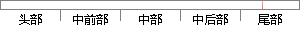

此时测试集和训练集的误判率分别为0.
片段位置图

相似结果|
相似片段 1：压缩至很小时等距离方法导致的误判率会使测试生成失效。同样，由图 2-10（a）-（c）可知，对于三极点滤波器的训练集，用 k-近邻算法压缩 t 至 15，10和 5 时误判率分别为 2.4%，1.6
相似片段 2：长度分别为 15, 10和 5时，对于测试集，其误判率分别为 0.88%,1.25% 和 2%；对于训练集，其误判率分别为 1%, 1% 和 3%。而在表 2-5中，当响应向量长度分别为 15, 10和
相似片段 3：首先讨论最近邻法分类的误判率情况。样品x属于类c，的概率，记为P(qx)。设测试样品X的最近邻点为x’，对于测试样品x属于类c1和类C2的后验概率分别为P(cl∞、P(c2∞的二分类问题。当训练
相似片段 4：可见，此时孤岛检测模块没有发生误判，其输出的孤岛信号island始终是低电平，表明系统未发生孤岛，符合实际情形。图4．7(b)是神经网络重新训练后的单并网系统电网谐波电压组别3时发生孤岛(A—J情形)的测试波形。
|
※ 片段修改建议 ※
近似词参考：- 训练：练习
系统自动生成语句：此时测试集和练习集的误判率分别为0.
注：本片段修改建议为系统自动生成，仅供参考。